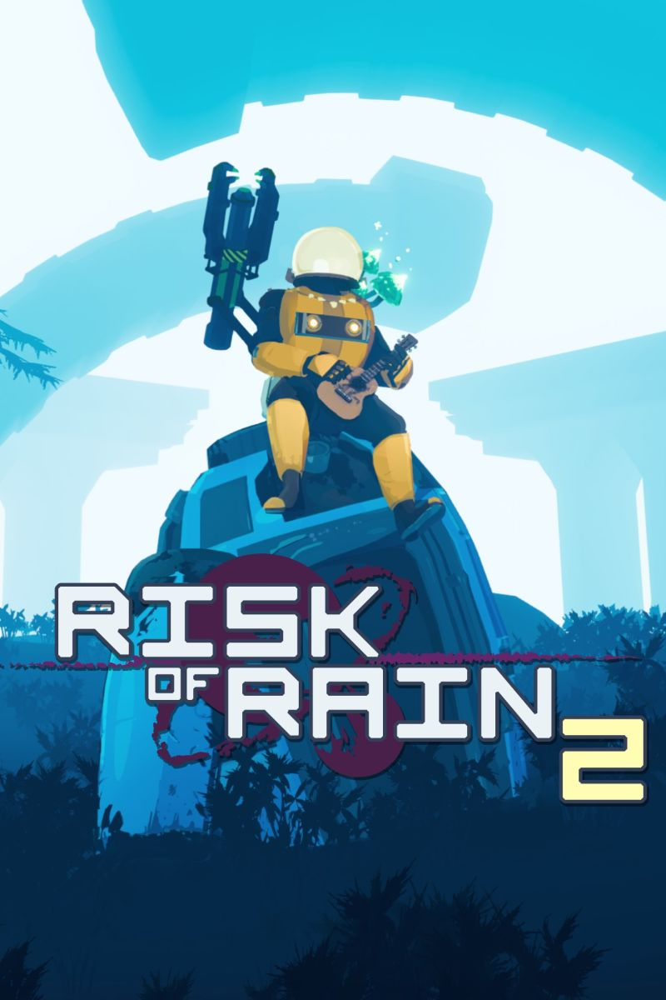

Risk of Rain 2
Escape a chaotic alien planet by fighting through hordes of frenzied monsters – with your friends, or on your own. Combine loot in surprising ways and master each character until you become the havoc you feared upon your first crash landing.
Review
Risk of Rain 2 is a third-person roguelike game. It is playable as single player or multiplayer. The basic premise of Risk of Rain 2 is to destroy enemies on each level to earn gold. The gold is used to open chests that are randomly dispersed throughout the level. Items within the chests are also random. There are almost 150 unique items as well as equipment that can be found. The effects of the items stack based on the number of each item collected on a single run. Runs are the best way to describe the objective of this game. With 14 different “survivors” to choose from, random enemy spawns, and random items, each playthrough will be a unique experience. The objective for each run is up to the player. They may choose to continuously play through the game until death or amass as many items as possible before attempting to defeat one of the endgame bosses. Starting out the game only 2 survivors are unlocked. The other 12 survivors are unlocked by completing certain challenges during playthroughs. These challenges range from defeating a certain boss, to holding certain equipment for a specified duration. One unique feature of this game is the difficulty system that is implemented. During the character selection, the player may choose 1 of 3 difficulties: easy, normal, or hard. Once the player has begun the playthrough a meter like bar in the top corner will begin to move. As time passes, the bar will cause the difficulty of the game to increase. The amount of time between increases is determined by the initial difficulty setting chosen in the character selection menu. The difficulty determines what kinds of enemy’s spawn in the level, the health of the enemies, and the number of enemies that spawn in at a given time. I frequently found early bosses of a run eventually become “normal” enemies in later levels.